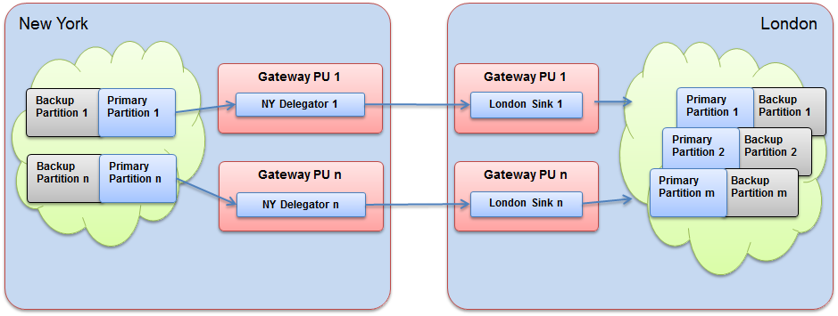
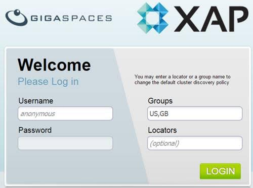
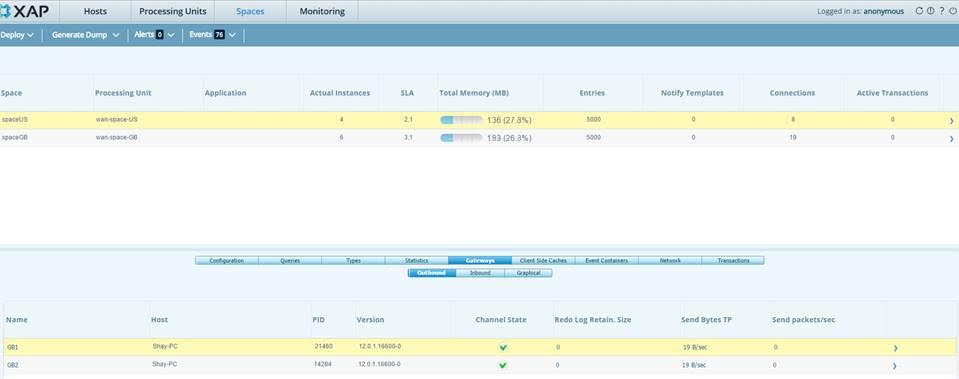
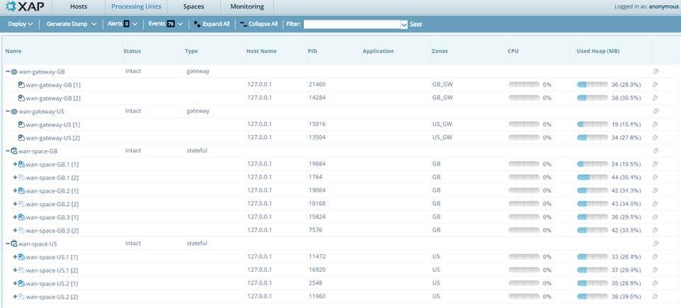

| Author | Product Version | Reference | Download |
|---|---|---|---|
| Shay Hassidim | 12.0.1 | Multi-instance gateway example |
By default, a single WAN/LAN gateway instance is used to perform replication from a local Space cluster to a remote Space cluster. For most systems, this provides sufficient throughput to address the activity generated by a single clustered Space. When a system contains large Space clusters or produces a large volume of activity, it may require a distributed (multi-instance) gateway setup.
The solution described here allows each partition (primary and backup instances) to replicate its activity via a dedicated gateway. In this topology, each partition uses a separate gateway instance that may run on a different machine, utilizing its full CPU and network bandwidth. This approach reduces the likelihood of accumulating a large redolog, which can cause a lag between the source Space and target Space data due to using a single gateway.
The example below includes a source Space (New York) with 2 partitions and a target Space (London) with 3 partitions. A gateway running in the New York site has 2 delegator instances, and the London site contains 2 gateway sink instances interacting with the London Space cluster.

< folder.Open the scripts folder and edit the setExampleEnv.bat/sh script to include the machine IP address as the
The scripts folder contains the necessary scripts to start the Grid Service Agent for each site, and the deployAll.bat/sh script that is used to automate the deployment of all gateways and Space instances. This allows you to run the entire setup on a single machine.
startAgent-GB.bat/sh script to start the GB (London) site agents.startAgent-US.bat/sh script to start the US (New York) site agents.deployAll.bat/sh script to deploy the required Processing Units.After the US and GB Space clusters and gateways are deployed, you should see the following via the Web Management Console (make sure you use US and GB as the lookup groups when you log in):



The US Space pu.xml should include the ${clusterInfo.instanceId}, as demonstrated below:
<os-gateway:targets id="gatewayTargets" local-gateway-name="US${clusterInfo.instanceId}">
<os-gateway:target name="GB${clusterInfo.instanceId}" />
</os-gateway:targets>
The US gateway pu.xml should include the ${clusterInfo.instanceId}, as demonstrated below:
<os-gateway:delegator id="delegator" local-gateway-name="US${clusterInfo.instanceId}" gateway-lookups="gatewayLookups">
<os-gateway:delegation target="GB${clusterInfo.instanceId}" />
</os-gateway:delegator>
The GB gateway pu.xml should include the ${clusterInfo.instanceId}, as demonstrated below:
<os-gateway:sink id="sink" local-gateway-name="GB${clusterInfo.instanceId}" gateway-lookups="gatewayLookups"
local-space-url="jini://*/*/spaceGB">
<os-gateway:sources>
<os-gateway:source name="US${clusterInfo.instanceId}"/>
</os-gateway:sources>
</os-gateway:sink>
Distributed transactions are not supported. Local transactions are supported.